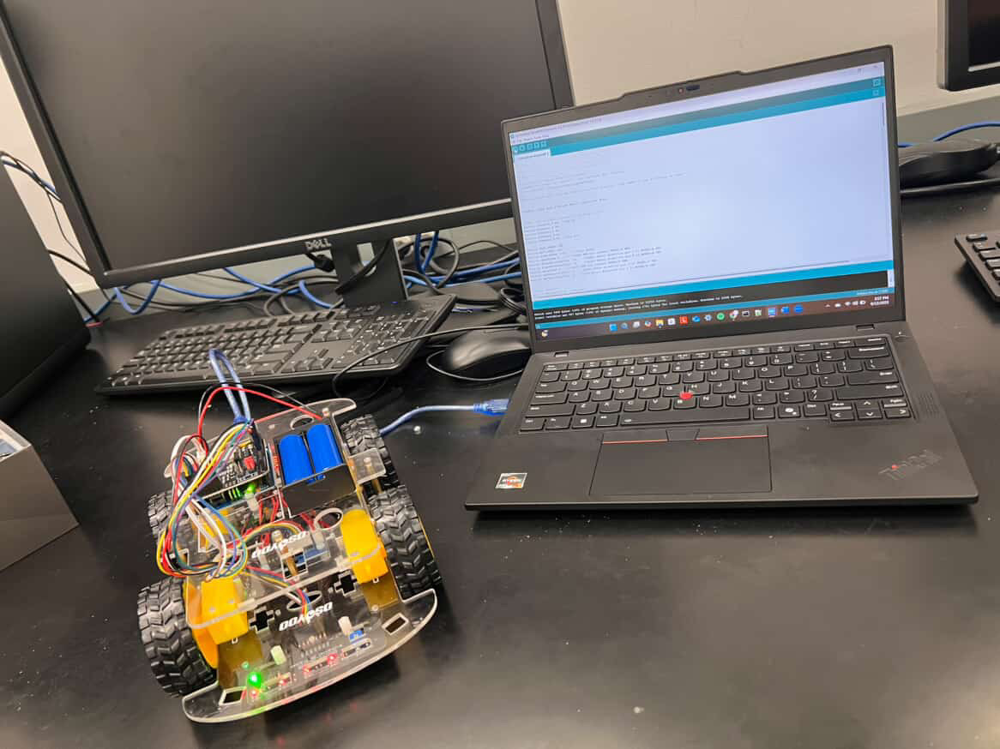
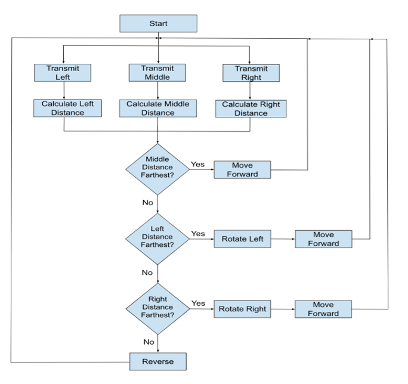
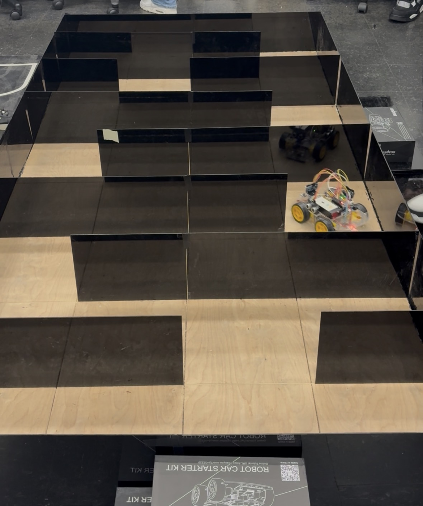
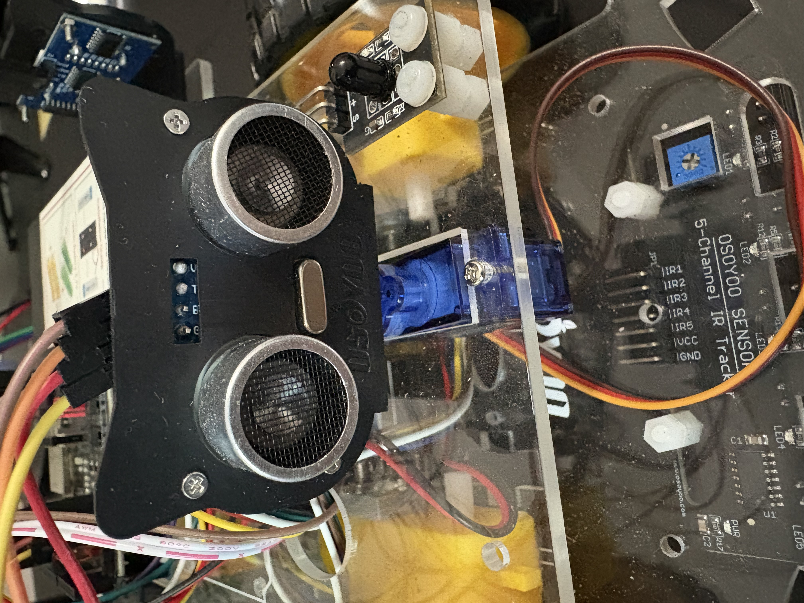
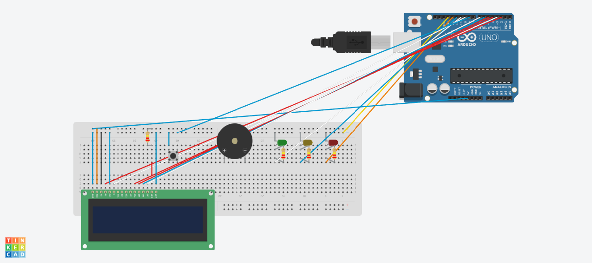
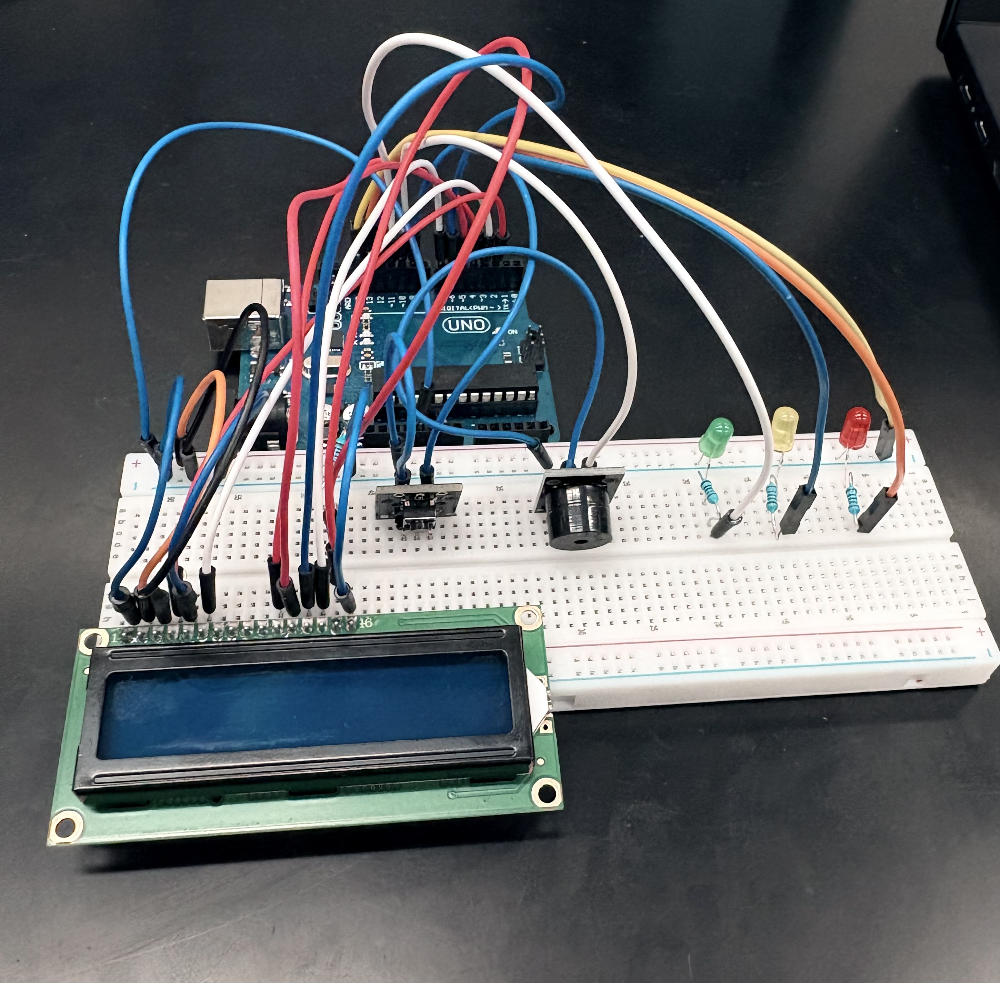

Skills
Java

Arduino

Visual Studio Code

SolidWorks
Java
Arduino
Visual Studio Code
SolidWorks
I am particularly interested in robotics, circuit design, embedded systems, and research. In addition to programming, I enjoy working with hardware and designing projects that require physical components. I have experience with microcontroller programming, sensor integration, and CAD design.

Demonstration of robot completing course in under 30 seconds
DESCRIPTION
Assembled and programmed a robot to follow a predetermined path using a 5-channel IR sensor and Arduino microcontroller. The robot was coded to interpret 32 unique sensor input combinations, making its ability to follow a path with curves and sharp turns more efficient.
DETAILS
RESULTS
The final design was successfully able to complete the provided tracks with high accuracy and reliability. The robot finished one of the provided tracks in 27 seconds, setting a new record for the fastest robot.
DESCRIPTION
This extension of the previous line-following design was programmed to detect when obstacles are obstructing its path. It utilized ultrasonic sensors to navigate through a maze. While the robot was planned to have one ultrasonic sensor attached, this robot used three for more precise readings.
DETAILS
RESULTS
The final design was successfully able to complete the maze in 2 minutes. Resolving issues involving sensor latency, and complicated decision-making logic significantly improved the accuracy of the robot's performance.

Robot design

Flowchart for an ultrasonic sensor transmitting from 3 different positions

Robot maneuvering through maze

Utilized 3 ultrasonic sensors

Schematic Design
Demonstration of light sequencing and crosswalk button

DESCRIPTION
Designed and built a prototype APS and traffic light system which triggers visual and auditory cues through an implemented pedestrian push button. This embedded system uses a button, passive buzzer, LCD display, and LEDs to simulate a real-world traffic intersection.
DETAILS
RESULTS
The final design successfully combined multiple accessibility features into a single system. The largest hurdle was solving timing and responsiveness issues.
DESCRIPTION
During this internship, I contributed to the development of a golf training aid designed to help golfers maintain a consistent swing radius. Using SolidWorks, I redesigned the adjustable quick-release clamping mechanism responsible for accommodating users of different heights and swing preferences.
DETAILS
RESULTS
The golf training aid is still undergoing its final iterative design phase. My contributions have led to a more user-friendly and visually refined clamping mechanism, necessary for the device's adjustability feature.
DESCRIPTION
Photography is a personal hobby of mine, and I wanted to develop a website to showcase my work. Using Visual Studio Code, I designed and built a platform using HTML and CSS.